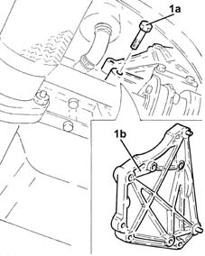
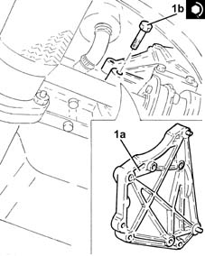

5530A40 alternator brackets/mount/spacer - r r
- Path
- Procedures > 55 ELECTRICAL EQUIPMENT > 5530 CURRENT GENERATOR > 5530A alternator and components > 5530A40 alternator brackets/mount/spacer - r r
- Kind
- repair procedure (removal / refitting; the operation number is the code)
- Applies to
- engines: 1.3 JTD; all production periods
- Interactive page
- https://sloeber94.github.io/elrnDB-lYpsln/en/#/2429396
Applies to: engines: 1.3 JTD; all production periods
 Removing
Removing
 Refitting
RefittingPosition the vehicle on the ramp.
Ensure that the ignition key is in the OFF position, then loosen the bolt and disconnect the battery negative (-) terminal.
 | Name | Connector |
|---|---|---|
- | Battery |
Proceed with removal 4450B04 right front wheel r r .
Proceed with removal 7055B66 Engine compartment DUST SHIELD protection in right front wheel arch - R.R. .
Proceed with removal 7055B91 Right front WHEEL ARCH LINER - R.R. .
Proceed with removal 1092G10 single engine belt r r .
Proceed with removal 5530A10 alternator - r+r .
1. Undo the bolts (1a) and remove the alternator mounting (1b).

Applies to: engines: 1.3 JTD; all production periods
Refitting
Removing1. Place the alternator mounting (1a) back in its housing and secure it tightening the bolts (1b) to the recommended torque.
 | Fastening | Component | Ø | Value (daNm) |
|---|---|---|---|---|
1b | Bolt | ALTERNATOR SUPPORT | M8 | (Engine crankcase side) 2.3 ÷ 2.8 |

Applies to: engines: 1.3 JTD; all production periods
Proceed with refitting 5530A10 alternator - r+r .
Proceed with refitting 1092G10 single engine belt r r .
Proceed with refitting 7055B91 Right front WHEEL ARCH LINER - R.R. .
Proceed with refitting 7055B66 Engine compartment DUST SHIELD protection in right front wheel arch - R.R. .
Proceed with refitting 4450B04 right front wheel r r .
Connect the negative (-) battery terminal.
Remove the vehicle from the ramp.
Topics linked from this page (6)
- 1092G10 single engine belt r r
- 4450B04 right front wheel r r
- 5530A10 alternator - r+r
- 7055B66 Engine compartment DUST SHIELD protection in right front wheel arch - R.R.
- 7055B91 Right front WHEEL ARCH LINER - R.R.
- A1B Battery ( BATTERY NEGATIVE )